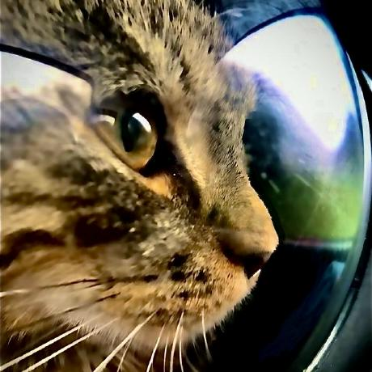

Just Roll
Una plataforma web diseñada para ayudar a los jugadores de Teamfight Tactics (TFT) a consultar composiciones, conocer estrategias y aprender a jugar de manera más competitiva.
Just Roll busca facilitar el acceso a información útil del juego y orientar a los jugadores en la toma de decisiones durante sus partidas, desde la elección de unidades hasta la construcción de composiciones.

Problema que aborda
Los jugadores de TFT pueden tener dificultades para encontrar composiciones actualizadas, comprender las sinergias entre unidades y aprender las estrategias necesarias para mejorar su rendimiento en partidas competitivas.
Solución propuesta
Just Roll reúne información sobre composiciones y estrategias en un mismo sitio, ofreciendo a los jugadores una referencia para estudiar alternativas, comprender sus posibilidades y mejorar progresivamente sus decisiones de juego.
Funcionalidades principales

Consulta de composiciones
Permite consultar composiciones del juego, conocer las unidades que las conforman y explorar diferentes alternativas estratégicas.

Estrategias competitivas
Ofrece información de apoyo para comprender las decisiones de juego, las sinergias y la construcción de equipos más efectivos.

Aprendizaje de TFT
Busca ayudar a los jugadores a comprender las mecánicas y mejorar sus conocimientos para tomar decisiones más informadas durante las partidas.
Objetivo del proyecto
Desarrollar una plataforma web que facilite la consulta de composiciones de Teamfight Tactics y contribuya al aprendizaje de estrategias competitivas, ayudando a los jugadores a mejorar su comprensión del juego y sus decisiones durante las partidas.
Integrantes del equipo
Alejandro España Meza
Estudiante de Ingeniería de Software
Apasionado por el desarrollo de software, la resolución de problemas y la creación de aplicaciones funcionales e innovadoras.

Luciana Cuenca Gómez
Estudiante de Ingeniería de Software
Interesada en el desarrollo de aplicaciones, la tecnología y la creación de soluciones para necesidades reales.

Johnatan Matheu Ruales Galvis
Fullstack AI Engineer & Product Owner
Enfocado en crear aplicaciones web modernas, productos digitales escalables y soluciones con inteligencia artificial.
Enlaces del proyecto
Explora la plataforma y conoce su desarrollo.